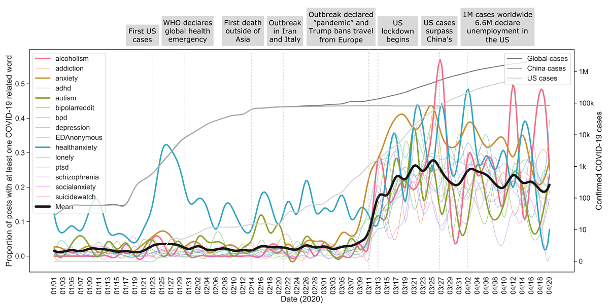

Overall Aim: To detect health symptoms from voice, language, and other sensor data
Team Members: Isaac Bevers, Kaley Jenny, Rahul Brito, Jordan Wilke, Miles Silva, Fabio Catania
Prior work:
Analyzing sustained vowel and read speech to detect unilateral vocal fold paralysis. Also exploring biases in recording and comparing ML performance to that of clinician’s ability to detect diagnosis from voice.
Collaborators: Phil Song
127 studies, 8 psychiatric disorders, description of acoustic features, guidelines for data acquisition and machine learning models
Collaborators: Kate Bentley
Analyzing 800 000+ posts from 2018 to 2021, we tracked changes in semantic content across 15 mental health support groups (e.g., r/SuicideWatch, r/BipolarReddit) and found vulnerable groups and a doubling of posts within a suicidality and loneliness clusters.
Mental Health Reddit Dataset
Zenodo
Github & OSF
Collaborators: Laurie Rumker, Tanya Talkar, John Torous, Guillermo Cecchi
Collaborators: Matt Nock, Walter Dempsey, Kelly Zuromski, Daniel Kessler, RallyPoint